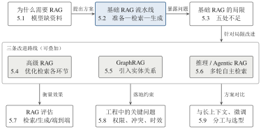

5.1 为什么需要检索增强生成
一个读过海量文本的模型，为什么会用笃定的语气说出不存在的判例？把企业文档拿去微调能不能解决？本节先从语言模型的训练目标说明“自信地答错”从何而来，归纳出准确性、实时性、权威性三类问题；再说明微调为什么不适合承担“记住不断变化的事实”这项工作；最后给出 RAG 的基本思想与来历。结论是：RAG 不改动模型参数，而是把知识放在模型外部、按需检索，从而同时缓解这三类问题。
5.1.1 模型为什么会自信地答错
先看模型是怎样“知道”一件事的。语言模型在训练时只做一件事：给定前文 \(x_{<t}\)，提高真实下一个 token \(x_t\) 的条件概率 \(P(x_t\mid x_{<t})\)。训练语料中反复出现的事实，会以统计规律的形式沉淀在模型参数 \(\theta\) 里；回答问题时，模型把问题当作前文，逐个 token 选出最可能的续写。这里有两个关键点：第一，参数在训练结束时就固定了，此后发生的事模型无从知道；第二，训练目标衡量的是续写是否符合语料的统计规律（“像不像”），并不直接检验内容是否属实（“对不对”）。当问题落在模型没见过的范围时，它仍然会按统计规律给出一段最像答案的文字，而不会自动停下来说“我不知道”。由此产生的、语气自信但内容不真实的输出称为幻觉（hallucination），其成因与分类见第 2 章。
在企业和专业场景中，这一机制表现为三类具体问题（表 5-1）。
表 5-1 大模型在专业场景中的三类问题
| 问题 | 表现 | 根源 | RAG 如何缓解 |
|---|---|---|---|
| 准确性 | 组织内部术语与通用含义不同（例如把退款叫“冲正”），模型按通用含义作答 | 内部语料不在训练数据中，只能按公共语料猜测 | 检索内部文档，让术语的定义随片段一起进入上下文 |
| 实时性 | 训练截止后的新规、新价格、新组织架构一概不知，常用旧知识拼凑 | 参数在训练结束时冻结 | 更新知识库即可，模型参数不动 |
| 权威性 | 即使答对，也说不出出自哪份文件哪一条，无法审计 | 知识以分布式参数形式存储，无法定位来源 | 每个片段带来源与位置，回答可附引用 |
三类问题会相互放大：模型不知道截止日期之后的事，就会用旧知识拼凑；回答没有出处，用户就无从核对；内部术语再一混乱，连判断答案是否离谱都很难。
5.1.2 为什么不直接微调
一个直接的想法是微调（fine-tuning）：把企业文档整理成训练数据，在现有模型上继续训练，让模型“记住”这些知识（微调方法见第 3 章）。这条路在“记住不断变化的事实”上有三个障碍：
更新成本高：每次知识变化都要重新准备数据、训练和评测，算力与人力开销都不小；
更新周期长：从制度发布到模型上线往往要几天到几周，而知识库更新可以按小时计；
可能遗忘：在新数据上继续训练，可能损害模型原有能力，这一现象称为灾难性遗忘（catastrophic forgetting）。
此外，微调后的知识仍然存放在参数里，回答依旧给不出出处。微调更擅长改变模型“怎么说”——语气、输出格式、领域表达习惯；而“说什么”，尤其是频繁变化、需要引用的事实，更适合交给外部知识库。二者的完整对比见第 5.9 节。
5.1.3 RAG 的基本思想与由来
一句话机制 RAG 在模型回答之前插入一次检索：系统把用户问题拿到外部知识库中查找最相关的若干片段，把这些片段与问题拼成提示词，再交给大模型依据片段生成回答。按数据流动的顺序，可以概括为三个动作：
检索（Retrieve）：输入用户问题，在知识库中找出相关片段，输出一个按相关度排序的片段列表；
增强（Augment）：输入问题与片段，按提示词模板拼装成上下文，输出一段完整的提示词；
生成（Generate）：输入提示词，由大模型生成回答，并标注所依据片段的编号。
模型参数始终不变。用考试打比方，这相当于把闭卷考试改成开卷考试：考生还是那个考生，但答题前桌上已经放好了相关的几页资料。
来历 这一思路由 Facebook AI Research（现 Meta AI）的 Lewis 等人在 2020 年提出[3]。他们把知识分为两类：存放在模型权重里的参数化记忆（parametric memory），以及存放在外部索引里、可以随时替换的非参数化记忆（non-parametric memory）。具体实现中，非参数化记忆是把维基百科切成约 2100 万个 100 词段落后建立的稠密向量索引，检索器采用 DPR（Dense Passage Retrieval，稠密段落检索）模型[4]，即用两个编码器分别把问题和段落编码成向量，生成器采用预训练的序列到序列模型 BART；检索器的查询编码器与生成器端到端联合训练，文档编码器与索引则保持固定。论文比较了两种用法：RAG-Sequence 在生成整个答案时使用同一批检索段落；RAG-Token 在生成每个 token 时都可以依据不同的段落。该模型在三个开放域问答数据集上取得了当时的最好成绩，生成的文本也比纯参数模型更具体、更符合事实。同一时期，Google 的 REALM[5] 把检索器引入了预训练阶段。
辨析
论文中的 RAG 是一个需要联合训练检索器与生成器的端到端模型；今天工程实践中所说的 RAG，通常指“检索—拼装提示词—调用现成大模型生成”的系统模式，检索器与生成器分别训练、互不感知。两者同名、思想同源，但不是一回事。本章除第 5.1.3 小节外，“RAG”均指后者。
优势 RAG 之所以成为企业部署大模型时最常用的方案，在于它同时带来以下好处：
补充私有知识：企业制度、工单、合同、代码库等未进入训练数据的资料可以接入；
减少幻觉：模型有材料可依，并可以要求它在材料中找不到答案时明确拒答；
无需微调：不重新训练模型，就能获得一定程度的“模型私有化”；
适应快速变化：知识库更新后，系统立即能回答新问题；
可以引用：回答可附上原文出处，便于审计和核对；
数据不进入模型：外挂知识库不参与模型训练，私有数据可以留在本地服务器，每次只把检索到的少量片段送入模型。
需要说明的是，RAG 不是“给模型加一个搜索框”，也不是“把文档全部塞进提示词”：前者只做了检索，后者只是长上下文。RAG 是一套包含数据解析、切分、索引、检索、排序、拼装、生成、校验与评估的工程系统，任何一环出错，最终都会表现为“模型答错了”。图 5-1 给出本章各节之间的关系。

图 5-1 本章知识地图。第一行给出问题与基础方案，第二行是三条可以叠加使用的改进路线，第三行讨论如何评估、如何落地以及何时选用 RAG